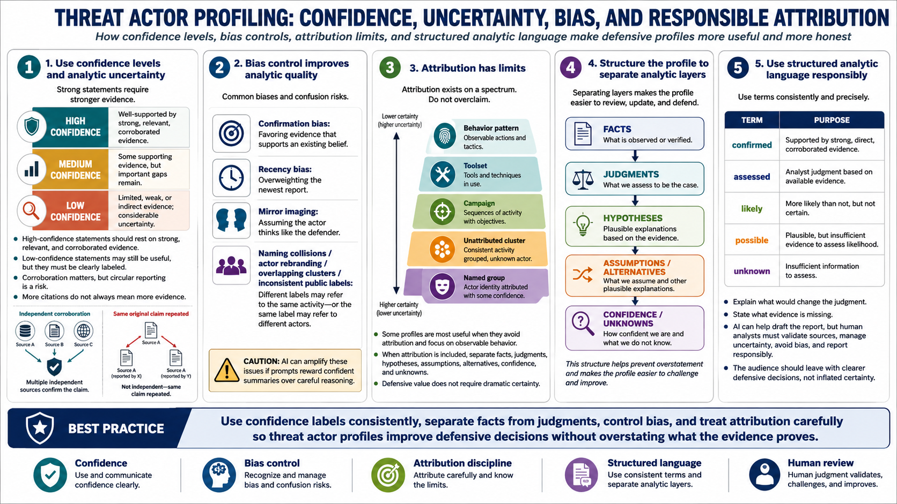

Confidence, Bias, Attribution, and Reporting
Connecting to LMS... Progress: in progress

Narration
Responsible threat actor profiles use confidence levels and analytic uncertainty. A high-confidence statement should rest on strong, relevant, and corroborated evidence. A low-confidence statement may be useful, but it should be clearly labeled. Corroboration matters, but analysts must watch for circular reporting, where multiple sources repeat the same original claim without independent verification. More citations do not always mean more evidence.
Bias control is part of analytic quality. Confirmation bias leads analysts to favor evidence that supports an existing belief while discounting contrary information. Recency bias can overweight the newest report. Mirror imaging can cause analysts to assume an actor thinks or operates like the defender would. Naming collisions, actor rebranding, overlapping clusters, and inconsistent public labels can all create confusion. AI can amplify these issues if the prompt rewards confident summaries over careful reasoning.
Attribution has limits. A profile may discuss a named group, an unattributed cluster, a campaign, a toolset, or a behavior pattern, but it should not overclaim. Some profiles are most useful when they avoid attribution entirely and focus on what defenders can observe and prepare for. When attribution is included, the report should separate facts, judgments, hypotheses, assumptions, alternatives, confidence, and unknowns.
Structured analytic language makes reporting more defensible. Words such as likely, possible, assessed, confirmed, and unknown should be used consistently. The profile should explain what would change the judgment and what evidence is missing. AI can help draft the report, but human analysts must validate sources, manage uncertainty, avoid bias, and report responsibly. The audience should leave with clearer defensive decisions, not inflated certainty.